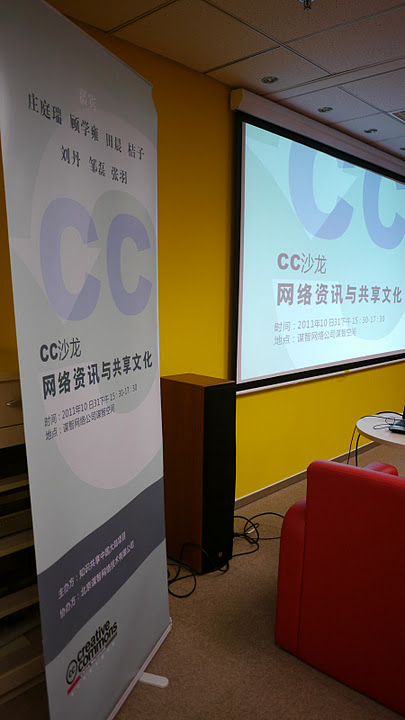

台灣創用CC計畫拜訪知識共享中國大陸項目

◎ 本文轉錄自台灣創用CC計畫網站採用 CC-BY-SA 3.0 台灣授權條款釋出
就在 10 月 31 日週一，趁著到北京出席國際會議的機會，台灣創用CC計畫 (CC Taiwan) 主持人莊庭瑞拜訪了知識共享中國大陸項目 (CC China Mainland) 負責人、中國人民大學法學院王春燕教授，並參與了由王春燕教授主持的「CC沙龍之網絡資訊與共享文化」活動。這項活動安排在週一下午 3:30 到 5:30 於北京謀智網絡技術有限公司 (Mozilla Online) 附設的謀智空間舉行。
於這項活動中，清華大學工業工程系教授顧學雍教授介紹了創客聯盟 (toyhouse.cc)，王盛林與肖文鵬兩位先生介紹了創客空間 (BEIJING MAXPACE)。兩者都推展講究動手作、協力開發的實體與網絡空間 (hacker/maker space)。劉丹先生以「開放與童稚」為題，講述 Open Party 這項由北京多個技術社群共同舉辦的 Unconference 型態的社交活動。中文維基百科活躍使用者鄒磊先生，以及科學松鼠會的鄭然先生，都以文稿編寫協作平台為例，說明創用CC授權這類公眾授權條款的必要性。莊庭瑞提出關於網絡資源 (web resources) 流通一些觀察，尤其在內容與社會網絡服務商集中化、整合化之後，對於公眾授權條款採用上的可能影響。莊庭瑞也介紹幾項個人喜好的台灣計畫：自由軟體鑄造場 (openfoundry.org)，EzGo9 自由軟體應用推廣光碟，以及 PeoPo 公民新聞平台 (peopo.org)。這三項計畫都採用創用CC授權條款散布部份內容。
▲ 圖2：莊庭瑞展示 OpenFoundry。作者 CC China Mainland，CC-BY-SA 2.0 Unported 授權
這項活動雖然預計到 5:30 結束，但是因為互動熱烈，進行到晚上 7:00 才結束。於活動開始之前，參與者也與北京謀智網絡的董事長暨執行長宮力博士交換意見；活動結束之前，謀智網絡的社區推廣經理張羽女士，也跟與會者分享了 Mozilla 基金會的 Drumbeat 和 Hackasaurus 等推廣專案。
▲ 圖3：莊庭瑞與王春燕教授和宫力博士交換意見。作者 CC China Mainland，CC-BY-SA 2.0 Unported 授權
這次能夠參與這項CC沙龍交流活動，我們特別感謝知識共享中國大陸項目負責人王春燕教授的邀請、以及項目經理朱捍東先生的安排（朱捍東先生所攝活動照片）。